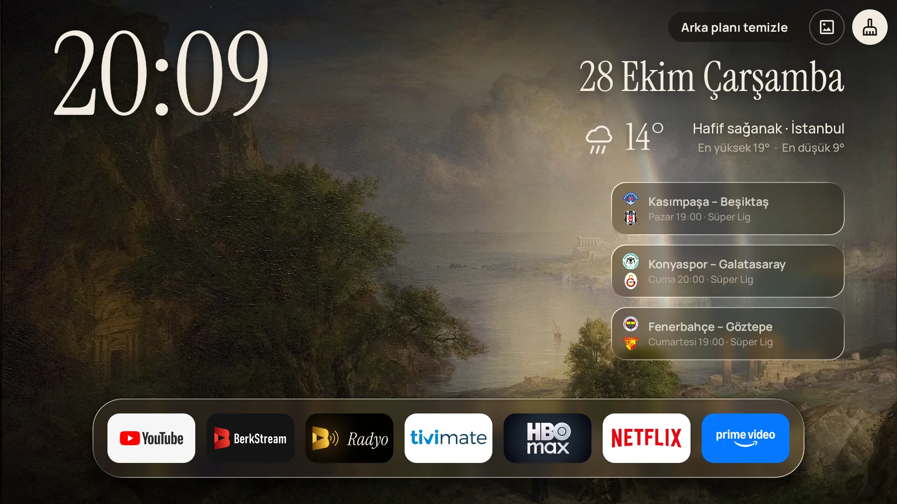
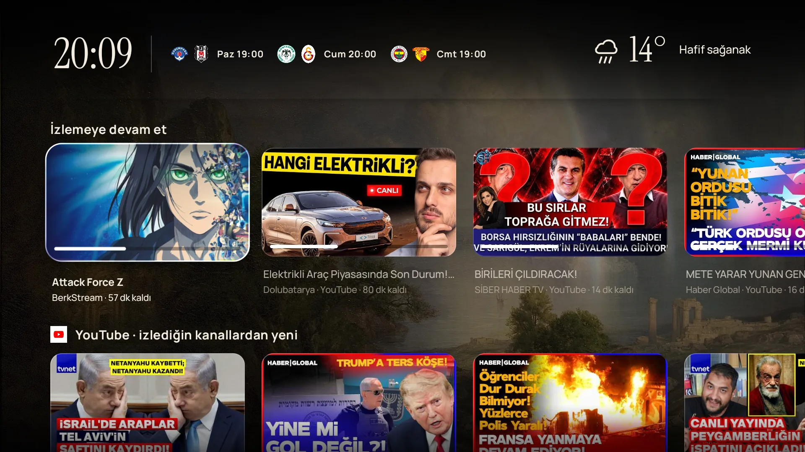
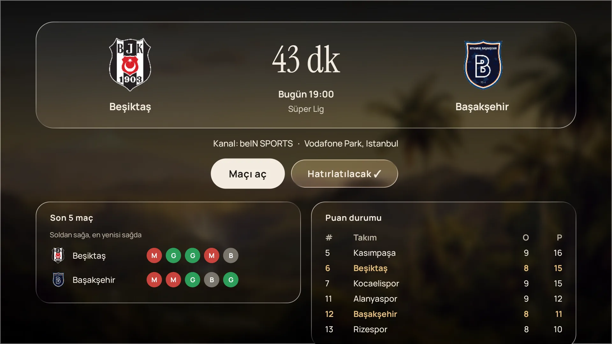
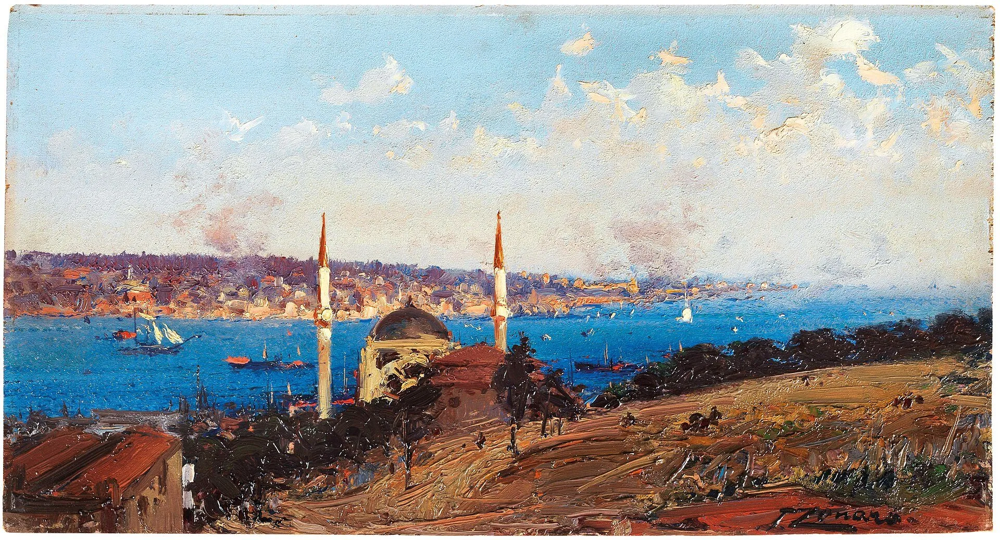

Televizyonun, sakin hâliyle.
BerkOS, Google TV'nin reklam ve öneri dolu ana ekranının yerine geçer. Açınca saat, hava, bugünün maçları ve kaldığın yer. Gerisi duvarda asılı bir tablo.

Açınca ne görüyorsan, o kadar.
Bilgi az, ekran ferah. Kumandada aşağı inersen kaldığın diziler ve videolar gelir; inmezsen ekran bir tablo olarak kalır.

Kaldığın yerden, hangi uygulamada olursa.
Netflix, YouTube ve diğerlerinde yarım bıraktığın şeyler tek satırda. Karta bas, doğrudan kaldığı saniyeden açılsın.
- İzlemeye devam et, uygulama fark etmeksizin
- Takip ettiğin YouTube kanallarından yeni videolar
- Netflix'te Türkiye'de bu hafta ilk 10
- Satırları sırala, istemediğini kapat

Maç günü ana ekranda, canlı skor dahil.
Süper Lig'de büyüklerin maçları saati ve kanalıyla ana ekranda. Maç başlayınca kart canlıya döner, skor işler. Karta basınca kadrolar, son beş maç, aralarındaki geçmiş ve puan durumu.
Saat ve tarih
Büyük, okunaklı, odanın öbür ucundan bile.
Hava durumu
Bulunduğun şehrin anlık derecesi, günün en yükseği ve en düşüğü. Anahtar, hesap yok.
Şehrini seç
İlk açılışta yaklaşık şehrini kendisi bulur. Ayarlar › Şehir'den 81 ilden istediğini seç.
Cam uygulama çubuğu
Sık açtıkların altta. Basılı tut, taşı ya da kaldır.
Duvar resmini sen seç
Ana ekranın arkasındaki tabloyu listeden seç ya da tek tuşla sıradakine geç.
Arka planı temizle
Arkada açık kalan uygulamaları tek tuşla kapat, TV rahatlasın.
Kimse izlemiyorken, duvarda bir tablo.
TV boşta kalınca Sergi açılır: Osmanlı İstanbul'undan Japon baskılarına, Monet'den James Webb'in uzay fotoğraflarına. Hepsi kamu malı, hepsi künyesiyle.

557 Türk radyosu, eski usul bir kadranla.
BerkOS Radyo ayrı bir uygulama, kurulum paketiyle birlikte gelir. Ana ekrandaki eski radyoya basınca son dinlediğin istasyon çalar; ekranı kapatsan da arkada çalmaya devam eder.
- Popüler, Türkü & Halk, Sanat & Nostalji, Arabesk, Pop, Haber & Spor, Dini, Yabancı & Caz
- Tamam'ı basılı tut, favorilere ekle
- Kumandanın kanal ve medya tuşlarıyla istasyon değiştir
- Uyku zamanlayıcısı: 15, 30, 60 ya da 90 dakika
- Yayın adresi değişen radyonun yenisini kendisi bulur
Kurulum, beş dakika.
Play Store'da yok, APK olarak kuruluyor. Bilgisayar ve TV aynı Wi-Fi'da olsun, gerisini script hallediyor.
Bilgisayarın yok mu? Sadece kumandayla kur ›
TV'de geliştirici modunu aç
Ayarlar › Sistem › Hakkında › Android TV OS derlemesi'ne 7 kez bas. Sonra Geliştirici seçenekleri › USB hata ayıklama'yı aç.
Kurulum paketini indir
Aşağıdaki zip'i bilgisayara indir, klasöre çıkar. TV'nin IP adresini Ayarlar › Ağ'dan not et.
Çift tıkla, IP'yi yaz
BerkOS'u TV'ye Kur.bat'ı çalıştır. TV "izin verilsin mi" derse "her zaman izin ver". Bitti, Ev tuşu artık BerkOS'u açar.
Soranlar oldu.
Google TV'yi bozar mı? Geri dönebilir miyim?
Bozmaz. BerkOS sistemin ana ekranını silmez, sadece önüne geçer. Ayarlardan "Google TV ana ekranını aç" ile istediğin an eskisine dönersin; tamamen kaldırmak için paketteki BerkOS'u Kaldir.bat yeter.
Neden erişilebilirlik izni istiyor?
Ev tuşuna basınca Google TV kendi ekranını açıyor; BerkOS bunu fark edip öne geçebilmek için "Ev tuşu yardımcısı"nı kullanıyor. Google TV ekranındayken sadece "İzlemeye devam edin" başlıklarını okuyor. Başka uygulamaların ekranını okumuyor, hiçbir yere bir şey göndermiyor.
Hangi cihazlarda çalışır?
Android TV 8 ve üstü. Google TV Streamer'da günlük kullanımda, Google TV 14 emülatöründe test edildi. Chromecast with Google TV ve Android TV'li televizyonlarda da çalışması beklenir; sorun yaşarsan yaz.
Ücretli mi, hesap gerekiyor mu?
Hayır ve hayır. Hava ve maç bilgisi anahtarsız açık kaynaklardan geliyor. Ne giriş ne takip ne reklam.
Kumandayı al, dene.
BerkOS 1.1 + Radyo · kurulum paketi ikisini birden kurar · Android TV 8+